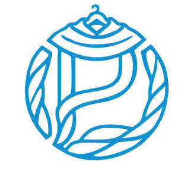

Trade Mark Journal No.2025/019 9 May 2025
UK00004184085 3 April 2025 (18,25,26)

- Class 18
- Fashion handbags; Bags for sports clothing; Holdalls for sports clothing; Handbags for men; Handbags for ladies; Ladies handbags; Leather for shoes; Small bags for men.
- Class 25
- Fashion hats; Menswear; Ready-to-wear clothing; Knitwear [clothing]; Face masks [fashion wear] ; Casual clothing; Foulards [clothing articles]; Clothing; Casual footwear; Dance clothing; Sportswear; Clothing for sports; Sports clothing; Bandeaux [clothing]; Playsuits [clothing]; Parts of clothing, footwear and headgear; Footwear; Leather clothing; Clothing of leather; Leather (Clothing of -); Leisure clothing; Denims [clothing]; Articles of sports clothing; Knitwear; Clothing for leisure wear; Japanese traditional clothing; Smart clothing; Corsets [clothing, foundation garments]; Clothing for martial arts; Articles of clothing; Japanese style sandals of leather; Footwear for women; Headbands [clothing]; Headbands for clothing; Cashmere clothing; Sports garments; Footwear for sports; Sports footwear; Athletic clothing; Kendo outfits; Jackets being sports clothing; Clothing of imitations of leather; Leather (Clothing of imitations of -); Clothes for sports; Furs [clothing]; Clothing for wear in wrestling games; Men's clothing; Leisure footwear; Japanese style clogs and sandals; Footwear for sport; Footwear for use in sport; Skating outfits; Party hats [clothing]; Clothing for gymnastics; Clothing for cycling; Footwear for snowboarding; Clothes for sport; Corsets [foundation clothing]; Corsets being foundation clothing; Articles of clothing made of leather; Garments for protecting clothing; Clothing layettes; Layettes [clothing]; Linen clothing; Gloves [clothing]; Gloves as clothing; Clothes; Aprons [clothing]; Maternity clothing; Jerseys [clothing]; Kerchiefs [clothing]; Shorts [clothing]; Capes (clothing); Gabardines [clothing]; Oilskins [clothing]; Silk clothing; Collars [clothing]; Knitted clothing; Veils [clothing]; Embroidered clothing; Hoods [clothing]; Windproof clothing; Wristbands [clothing]; Belts [clothing]; Belts for clothing; Rainproof clothing; Waterproof clothing; Visors [clothing]; Ready-made clothing; Jackets (Stuff -) [clothing]; Stuff jackets [clothing]; Bottoms [clothing]; Latex clothing; Trunks being clothing; Drawers [clothing]; Drawers as clothing; Woven clothing; Infant clothing; Ties [clothing]; Muffs [clothing]; Clothing for children; Bodies [clothing]; Clothing for babies; Tops [clothing]; Clothing for infants; Water-resistant clothing; Weatherproof clothing; Triathlon clothing; Pockets for clothing; Fabric belts [clothing]; Handwarmers [clothing]; Clothing for skiing; Chaps (clothing); Beach clothing; Thermal clothing; Cowls [clothing]; Fishing clothing; Braces for clothing; Mitts [clothing]; Footwear for men; Footwear for men and women; Socks for men; Men's underwear; Underwear for women; Tennis shirts; Tennis shoes; Clothing for men, women and children; Rugby shoes; Soccer shoes; Basketball shoes; Coats for men; Athletics shoes; Volleyball shoes; Shoes for leisurewear; Handball shoes; Golf shoes; American football shirts; American football pants; Men's socks; Sport shoes; Men's and women's jackets, coats, trousers, vests; Swim wear for gentlemen and ladies; Hockey shoes; Football shoes; Men's sandals; Sports shoes; Soccer shirts; Men's dress socks; Cycling shoes; Aqua shoes; Athletic shoes; American football bibs; Bathing suits for men; Men's suits; Sport shirts; Baseball shoes; Basketball sneakers; Tennis dresses; Snowboard shoes; American football shorts; Studs for football shoes; Golf footwear; Boxing shoes; Shoes; American football socks; Underclothing for women; Women's shoes; Tennis socks; Tennis shorts; Sports clothing [other than golf gloves]; Coats for women; Sneakers [footwear]; Athletics footwear; Golf shirts; Golf trousers; Sports shirts; Rugby shirts; Soccer boots; Polo shirts; Gymnastic shoes; Suspender belts for men; Mountaineering shoes; Polo boots; Leather shoes; Golf clothing, other than gloves; Jogging bottoms [clothing]; Ladies wear; Sports pants; Skiing shoes; Wooden shoes [footwear]; Leisure shoes; Nappy pants [clothing]; Waterproof shoes; Football shirts; Boots for sport; Tennis pullovers; Uppers for Japanese style sandals; Athletic footwear; Jogging shoes; Tennis wear; Cleats for attachment to sports shoes; Inner socks for footwear; Rugby boots; Running shoes; Sneakers; Soccer bibs; Shoes for casual wear; Boots for sports; Slip-on shoes; Volleyball jerseys; Fittings of metal for boots and shoes; Tennis skirts; Gloves for apparel; Tongues for shoes and boots; Tennis sweatbands; Snowboard trousers; Bowling shoes; Insoles for shoes and boots; Insoles [for shoes and boots]; Outerclothing for men; Football boots; Jackets [clothing]; Shoes for foot volleyball; Foot volleyball shoes; Suspender belts for women; Sports jackets; Soles for japanese style sandals; Canvas shoes; Moisture-wicking sports shirts; Bathing costumes for women; Outerclothing for girls; Chaps; Evening dresses; Dresses for evening wear; Bridesmaid dresses; Ballroom dancing shoes; Corsets [underclothing]; Teddies [undergarments]; Outerclothing for boys; Bridesmaids wear; Undergarments; Dresses; Nurse dresses; Bodices [lingerie]; Ladies' dresses; Girdles [corsets]; Womens' undergarments; Cocktail dresses; Bridal gowns; Bridal garters; Cheongsams (Chinese gowns); Leather dresses; Evening gowns; Dance shoes; Teddies [underclothing]; Fancy dress costumes; Women's ceremonial dresses; Girls' clothing; Wedding dresses; Dress shoes; Dressing gowns; Corsets; Paper hats for wear by chefs; Dresses for infants and toddlers; Babushkas; Trousers for children; Clothing for cyclists; Maternity dresses; Korean traditional women's waistcoats [Baeja]; Paper hats for wear by nurses; Night gowns; High-heeled shoes; Clothing for horse-riding [other than riding hats]; Petticoats; Dinner jackets; Babies' undergarments; Ladies' underwear; Pinafore dresses; Womens' underclothing; Tuxedos; Three piece suits [clothing]; Boy shorts [underwear]; Women's underwear; Lingerie.
- Class 26
- Accessories for apparel, sewing articles and decorative textile articles; Brooches [clothing accessories]; Brooches for clothing; Trimmings for clothing; Frills for clothing; Buckles [clothing accessories]; Bows for clothing; Whalebones for clothing; Clothing buckles.
CAPE LONDON LIMITED